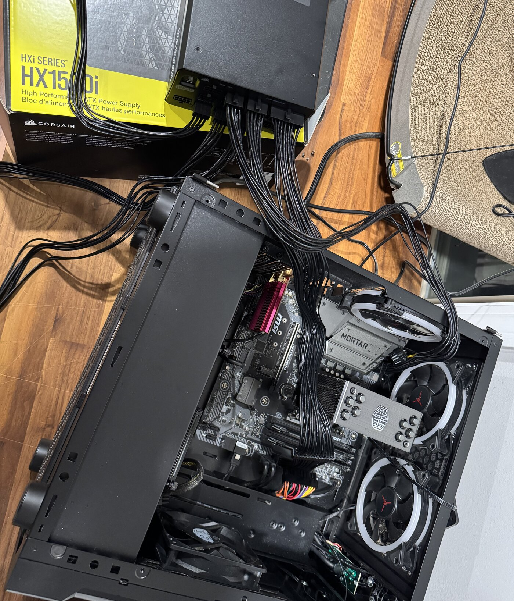
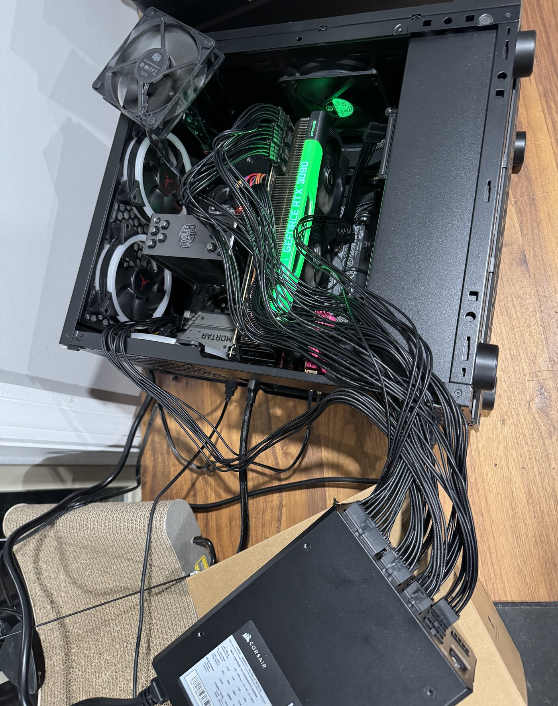
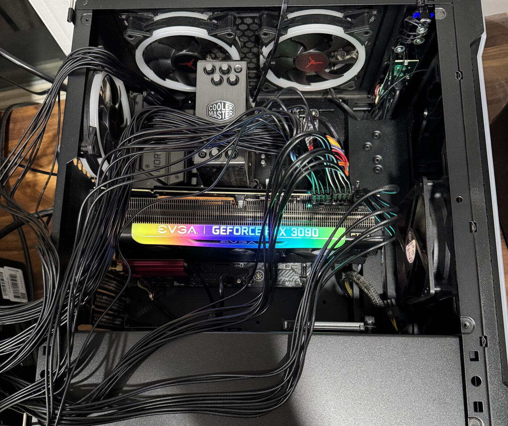
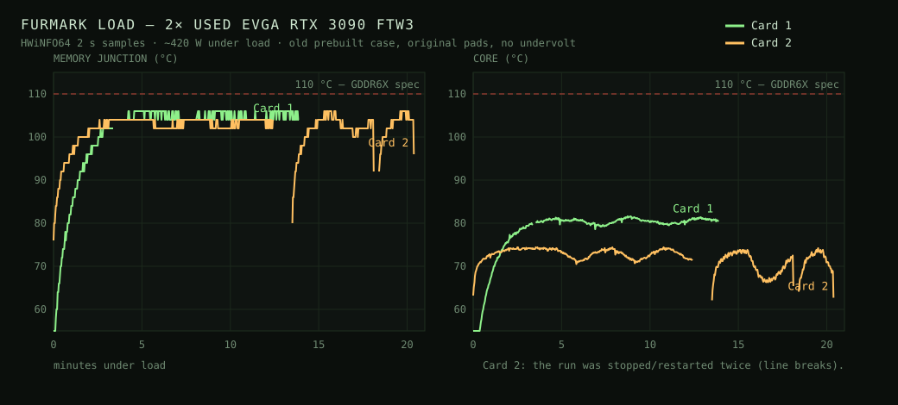

Everything that isn't wood — AI projects, cartoons, crypto, and whatever
else I'm deep-diving on this month.
01
Young George - cartoon in development
animated series · in developmentONGOING
Drafting a theme song, storyboard, pilot, and everything else you would expect. On the tech side, using hermes agent to stand up a server and rent gpu to download minimax h3 and locally generate videos.
Formatanimated series
Theme"No Cap"
Statusin the weeds
02
This website
personal websiteONGOING
I think this site will be permanently under construction.
StatusUnder construction
03
Lazy Website
macOS app · website editorSEP 2026
Built a macOS app to update this website without opening the HTML or running Git commands. Write an entry, add photos, preview it, and publish from one window.
Add new entries or edit existing ones without digging through files
Import photos, including iPhone HEIC images, and turn them into website-ready JPGs
Keep drafts private and preview changes before publishing
Check that the live page actually matches what was published
Everything I actually want to run locally wants more VRAM than one card has. Video models especially. So the plan is two used RTX 3090s — 48GB, and nothing else gets you that much VRAM for anywhere near the money. The rest of the machine is just somewhere to put the cards.
Both came off eBay, used. One seller doesn't take returns, so the only thing between me and an expensive brick is eBay's 30-day window and whether I actually test the card the week it shows up. That clock starts at delivery, not at "when I get around to it." A card sitting in its box is a card whose clock is running.
And I didn't have a PC to test a 3090 in yet. So I tested in the old prebuilt I already had — a known-good machine, so if something's wrong it's the card and not the build.
Some of this I learned the hard way:
Test on Windows, not Linux. NVIDIA's Linux driver only exposes core temp. The GDDR6X memory junction sensor is the number that decides keep-or-return, and HWiNFO is what reads it.
The old 600W power supply can boot a 3090 but can't load-test one. The 1500W supply sat outside the case on top of its own box, cables run in over the floor.
Three separate PCIe cables. Never daisy-chain two of the eight-pins — the protection trips and it looks exactly like a dead card.



Then memtest_vulkan to check the VRAM, and a FurMark burn with HWiNFO logging every 2 seconds. Screenshots lie a little: HWiNFO's "max" column only knows what had happened by the moment you hit the button. The CSVs are the actual record, so everything below is read off the logs.

What came out of it:
Card 1 — 13.9 minutes flat out at 419 W. Core peak 81.6 °C, hot spot 95.2 °C, memory junction 106.0 °C. Memory clock pinned at 1219 MHz the whole run, never throttled. Fans maxed at 100% / 3033 RPM. memtest_vulkan: passed.
Card 2 — 19 minutes at 405-419 W. Core peak 74.4 °C, hot spot 89.4 °C, memory junction 106.0 °C, memory clock also pinned, fans only needed 80% / 2394 RPM. memtest_vulkan: passed.
Card 2 runs about 7 °C cooler on the core at the same wattage, and it does it with a lot less fan. Same card model, same case, same test — so Card 1's cooler and paste are the weaker of the two. But both memory junctions land on exactly 106.0 °C, and that says the memory temps are being set by the case they're sitting in, not by the individual cards. Warm, but inside Micron's 110 °C spec for GDDR6X, and neither card ever dropped its memory clock, which is the part I actually care about.
So both are keepers, and now it's a build. The two cards are 2.75 slots each and end up about 5mm apart in the case, so undervolting both (~850 mV) is the next thing, before I get fancy about anything else.
Cards2× EVGA RTX 3090 FTW3 Ultra (used)
VRAM48 GB total · 2 × 24 GB GDDR6X
Forlocal open-weight video models
Verified withmemtest_vulkan + FurMark
Statusboth passed — building the rig
05
Lazy Downloader (yt-dlp app)
macOS app · open sourceAUG 2026
Built a native macOS app shell around yt-dlp — the powerful open-source video downloader that handles YouTube and hundreds of other sites. Wraps the CLI in a clean GUI so there's no terminal or flags required.
Paste a URL, pick a format, and download — no command line needed
Wraps yt-dlp's full power in a friendly macOS interface
Built entirely with Hermes agent — dogfooding at its finest